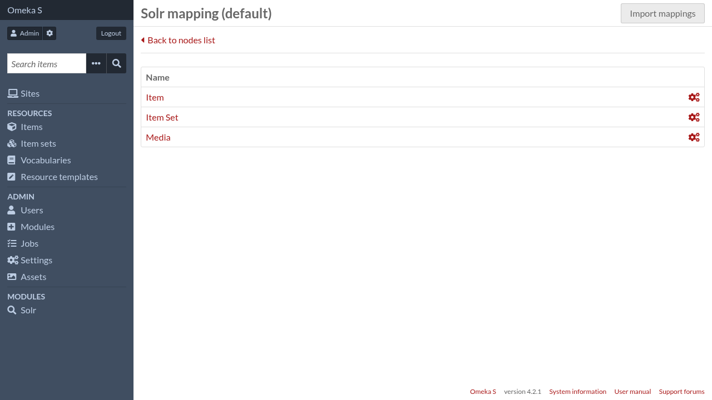
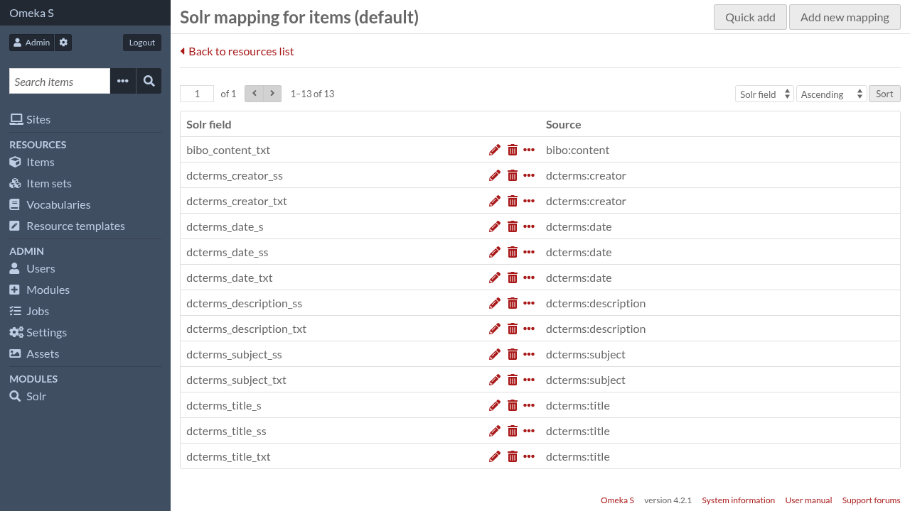
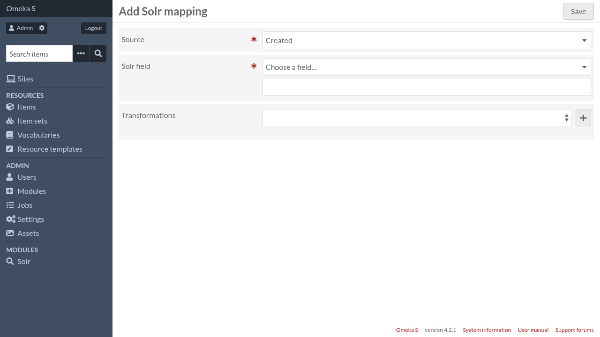

Indexation fields
Indexation fields (also called “mappings”) allow you to declare what is indexed into Solr and thus, what data will be used by Solr to retrieve results.
Each type of resource (item, media, item set) have its own indexation fields configuration. You only need to configure the part for the resource types you want in your results.

Below is the default indexation fields for items.

Add a new mapping
To create a new mapping, click on “Add new mapping”

- Source
The source is a piece of data stored in Omeka S. The list of available options depends on the resource type. It can also be augmented by other modules
- Solr field
The Solr field where that piece of data will be stored in Solr documents. You can either:
choose a Solr dynamic field in the list and a Solr field name will be auto-generated, or
type explicitely a Solr field name
- Transformations
Apply a series of transformations to the original data, either to filter out some values, to retrieve additional data, or to convert them to another format.
Other modules can add their own transformations